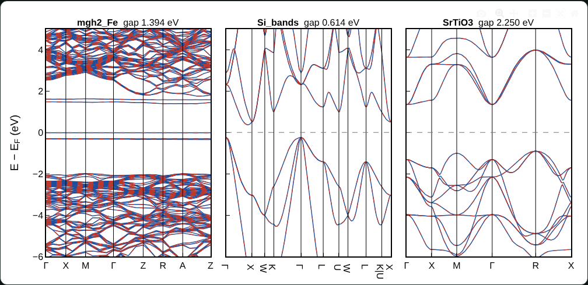

Computer simulations based on density functional theory (Hohenberg and Kohn
1964; Kohn and Sham 1965) predict how electrons behave in
materials and molecules, and are used to design batteries, catalysts and
hydrogen-storage compounds. The raw results of these simulations,
however, are large text and binary files whose format depends on the
program that produced them. BrUMaRe (Brillouin-zone
Utilities for Materials Research) turns these files into the
figures, tables and quantities that scientists need: electronic band
structures, densities of states, charge-density maps, the local
structure around defects and their formation thermodynamics. It reads
the outputs of five widely used programs, CASTEP (Clark et al. 2005), VASP (Kresse and Furthmüller
1996), SIESTA (Soler et al. 2002), Quantum
ESPRESSO (Giannozzi et
al. 2017) and ORCA (Neese et al. 2020), and analyses all of
them in the same way. The same analysis runs as a web page that needs no
installation and sends no data to any server, as a desktop application
that works offline, and as a command-line program for computing
clusters.
Statement of need
A typical first-principles study uses several post-processing tools,
each tied to one code or one task, and silent differences between them
(the energy reference of a band plot, the units of a density grid,
whether the Fermi level was recomputed) are a common source of error.
Comparing results from different codes in one consistent framework is
rarely possible, and figures are often published without citing every
method that produced them. BrUMaRe addresses researchers
and students in computational materials science, condensed-matter
physics and quantum chemistry who need publication-ready analyses of
heterogeneous outputs. Its design principles are: one data model for all
codes; the Fermi energy written by the code is never recomputed (by
default energies are shown on the original scale with the Fermi level
marked); identical results in the three front-ends; and reproducibility,
with every figure accompanied by plain-text data and every session able
to export a BibTeX file listing the software, the codes and the methods
actually used.
State of the field
Excellent tools exist for parts of this workflow. sumo (Ganose, Jackson, and
Scanlon 2018) and pymatgen (Ong et al. 2013) produce band
structures and densities of states mainly from VASP; VASPKIT (Wang et al. 2021)
automates VASP workflows; VESTA (Momma and Izumi 2011) visualises
structures and densities; the Bader program (Henkelman, Arnaldsson, and
Jónsson 2006; Tang, Sanville, and Henkelman 2009) partitions
charges; c2x (Rutter
2018) converts CASTEP formats; cclib (O’Boyle, Tenderholt, and Langner
2008) parses quantum-chemistry outputs. None of them combines,
for several plane-wave, localised-basis and molecular codes, the
electronic analysis with defect geometry, distortion indices (Robinson,
Gibbs, and Ribbe 1971; Baur 1974; Hoppe 1979), defect and hydride
thermodynamics (Freysoldt et al. 2014),
density-difference descriptors and cross-code comparison, in a
zero-installation interface with an equivalent command-line counterpart.
Contributing these features to an existing package was considered, but
each existing tool is organised around a single code family or a single
task, while the central requirement here was a code-agnostic data model
shared by an in-browser implementation and a dependency-light Python
program.
Software design
Readers specific to each code and file type convert every output to a
common representation (eigenvalues in Hartree, reciprocal lattice in
Bohr−1, structures in Å,
densities in e Å−3). In
Python, non-CASTEP inputs are registered in an in-memory virtual file
registry that mimics the CASTEP file set, so new codes were added
without modifying the analysis pipeline, and byte-by-byte regression of
CASTEP outputs guarded every change. The web application is a single
self-contained HTML file using Plotly.js; the desktop application embeds
the same document through pywebview (pywebview contributors 2024); the
command-line program is one Python file depending only on numpy (Harris et al.
2020) and matplotlib (Hunter 2007), which eases
deployment on clusters. The main trade-off was maintaining two
implementations (JavaScript and Python) of the same specification in
exchange for zero-installation use in the browser and scriptable use on
clusters; parity is verified by running both on the same inputs. Band
edges are obtained by electron counting, effective masses by parabolic
fits, charges by Voronoi (Voronoi 1908; Gellatly and Finney
1982) and on-grid Bader partitions (Henkelman, Arnaldsson, and Jónsson
2006), and an optional scissor or empirical PBE-to-G0W0 correction (Morales-García, Valero, and
Illas 2017) addresses the band-gap underestimation of semilocal
functionals while always reporting the original gap. The interface, help
and tutorial are available in six languages.

Band structures of calculations from
three different codes compared side by side, each aligned at its own
Fermi level.
Research impact statement
BrUMaRe was developed for, and is used in, a study of
transition-metal-substituted MgH2 for solid-state hydrogen storage
(Macedo
2025; Sakintuna, Lamari-Darkrim, and Hirscher 2007). It was
validated with public outputs from the test suites of pymatgen, sisl,
Quantum ESPRESSO and cclib: the PBE gap of Si (0.614 eV, indirect) and
its longitudinal electron mass (0.94 me, experiment
0.92 me),
the 20 μB
moment of ferromagnetic Fe2O3, the indirect R → Γ gap of SrTiO3 with crystal-field-split Ti 3d
states, and the HOMO–LUMO gap of divinylbenzene from ORCA. The browser
and command-line implementations give identical numbers. The software is
freely available as a web application, a Python package and a Windows
installer.
AI usage disclosure
Generative AI (Anthropic’s Claude) was used extensively to help write
and refactor parts of the JavaScript and Python code, to translate the
interface and tutorial, to draft documentation and to draft and edit
this paper. The scientific scope, methods, equations and requirements
were defined by the author. All AI-assisted code was reviewed and
verified by the author through comparison with real outputs of the five
supported codes, cross-checking of the two implementations and
byte-by-byte regression of CASTEP outputs. The author takes full
responsibility for the software and this paper.
Acknowledgements
The author thanks Benedet, R. O., without whom this work would never
have happened, Prof. J. R. C. Salgado and Prof. R. S. da Lapa for
supervision, and CNPq (Brazil) for a master’s scholarship.
References
Baur, Werner H. 1974. “The Geometry of Polyhedral Distortions.
Predictive Relationships for the Phosphate Group.”Acta
Crystallographica Section B 30 (5): 1195–215. https://doi.org/10.1107/S0567740874004560.
Clark, Stewart J., Matthew D. Segall, Chris J. Pickard, Phil J. Hasnip,
Matt I. J. Probert, Keith Refson, and Mike C. Payne. 2005. “First
Principles Methods Using CASTEP.”Zeitschrift
Für Kristallographie 220 (5–6): 567–70. https://doi.org/10.1524/zkri.220.5.567.65075.
Freysoldt, Christoph, Blazej Grabowski, Tilmann Hickel, Jörg Neugebauer,
Georg Kresse, Anderson Janotti, and Chris G. Van de Walle. 2014.
“First-Principles Calculations for Point Defects in
Solids.”Reviews of Modern Physics 86 (1): 253–305. https://doi.org/10.1103/RevModPhys.86.253.
Ganose, Alex M., Adam J. Jackson, and David O. Scanlon. 2018.
“Sumo: Command-Line Tools for Plotting and Analysis of Periodic
Ab Initio Calculations.”Journal of Open Source
Software 3 (28): 717. https://doi.org/10.21105/joss.00717.
Gellatly, B. J., and J. L. Finney. 1982. “Characterisation of
Models of Multicomponent Amorphous Metals: The Radical Alternative to
the Voronoi Polyhedron.”Journal of
Non-Crystalline Solids 50 (3): 313–29. https://doi.org/10.1016/0022-3093(82)90093-X.
Giannozzi, P. et al. 2017. “Advanced Capabilities for Materials
Modelling with Quantum ESPRESSO.”Journal of
Physics: Condensed Matter 29 (46): 465901. https://doi.org/10.1088/1361-648X/aa8f79.
Harris, Charles R., K. Jarrod Millman, Stéfan J. van der Walt, et al.
2020. “Array Programming with NumPy.”Nature 585: 357–62. https://doi.org/10.1038/s41586-020-2649-2.
Henkelman, Graeme, Andri Arnaldsson, and Hannes Jónsson. 2006. “A
Fast and Robust Algorithm for Bader Decomposition of Charge
Density.”Computational Materials Science 36 (3):
354–60. https://doi.org/10.1016/j.commatsci.2005.04.010.
Hoppe, Rudolf. 1979. “Effective Coordination Numbers
(ECoN) and Mean Fictive Ionic Radii
(MEFIR).”Zeitschrift Für Kristallographie
150: 23–52. https://doi.org/10.1524/zkri.1979.150.1-4.23.
Hunter, John D. 2007. “Matplotlib: A 2D Graphics
Environment.”Computing in Science & Engineering 9
(3): 90–95. https://doi.org/10.1109/MCSE.2007.55.
Kohn, W., and L. J. Sham. 1965. “Self-Consistent Equations
Including Exchange and Correlation Effects.”Physical
Review 140 (4A): A1133–38. https://doi.org/10.1103/PhysRev.140.A1133.
Kresse, G., and J. Furthmüller. 1996. “Efficient Iterative Schemes
for Ab Initio Total-Energy Calculations Using a Plane-Wave
Basis Set.”Physical Review B 54 (16): 11169–86. https://doi.org/10.1103/PhysRevB.54.11169.
Macedo, Bruno Henrique Dourado. 2025. “Influência de Defeitos
Substitucionais Nas Propriedades Estruturais, Eletrônicas,
Termodinâmicas e de Armazenamento Do Hidreto MgH2: Uma Abordagem Ab
Initio.” Trabalho de Conclusão de Curso (Bacharelado em
Engenharia Física), Universidade Federal da Integração Latino-Americana
(UNILA), Foz do Iguaçu. https://dspace.unila.edu.br/items/8db3836e-925d-422f-9cd2-6ff3f9f02080.
Momma, Koichi, and Fujio Izumi. 2011. “VESTA 3 for
Three-Dimensional Visualization of Crystal, Volumetric and Morphology
Data.”Journal of Applied Crystallography 44 (6):
1272–76. https://doi.org/10.1107/S0021889811038970.
Morales-García, Ángel, Rosendo Valero, and Francesc Illas. 2017.
“An Empirical, yet Practical Way to Predict the Band Gap in Solids
by Using Density Functional Band Structure Calculations.”The
Journal of Physical Chemistry C 121 (34): 18862–66. https://doi.org/10.1021/acs.jpcc.7b07421.
Neese, Frank, Frank Wennmohs, Ute Becker, and Christoph Riplinger. 2020.
“The ORCA Quantum Chemistry Program Package.”The Journal of Chemical Physics 152 (22): 224108. https://doi.org/10.1063/5.0004608.
O’Boyle, Noel M., Adam L. Tenderholt, and Karol M. Langner. 2008.
“Cclib: A Library for Package-Independent Computational Chemistry
Algorithms.”Journal of Computational Chemistry 29 (5):
839–45. https://doi.org/10.1002/jcc.20823.
Ong, Shyue Ping, William Davidson Richards, Anubhav Jain, Geoffroy
Hautier, Michael Kocher, Shreyas Cholia, Dan Gunter, Vincent L.
Chevrier, Kristin A. Persson, and Gerbrand Ceder. 2013. “Python
Materials Genomics (Pymatgen): A Robust, Open-Source Python Library for
Materials Analysis.”Computational Materials Science 68:
314–19. https://doi.org/10.1016/j.commatsci.2012.10.028.
pywebview contributors. 2024. “Pywebview: Build GUI
for Your Python Program with JavaScript,
HTML, and CSS.”https://pywebview.flowrl.com.
Robinson, Keith, Gerald V. Gibbs, and Paul H. Ribbe. 1971.
“Quadratic Elongation: A Quantitative Measure of Distortion in
Coordination Polyhedra.”Science 172 (3983): 567–70. https://doi.org/10.1126/science.172.3983.567.
Rutter, M. J. 2018. “C2x: A Tool for Visualisation
and Input Preparation for CASTEP and Other Electronic
Structure Codes.”Computer Physics Communications 225:
174–79. https://doi.org/10.1016/j.cpc.2017.12.008.
Sakintuna, Billur, Farida Lamari-Darkrim, and Michael Hirscher. 2007.
“Metal Hydride Materials for Solid Hydrogen Storage: A
Review.”International Journal of Hydrogen Energy 32
(9): 1121–40. https://doi.org/10.1016/j.ijhydene.2006.11.022.
Soler, José M., Emilio Artacho, Julian D. Gale, Alberto García, Javier
Junquera, Pablo Ordejón, and Daniel Sánchez-Portal. 2002. “The
SIESTA Method for Ab Initio Order-N
Materials Simulation.”Journal of Physics: Condensed
Matter 14 (11): 2745–79. https://doi.org/10.1088/0953-8984/14/11/302.
Tang, W., E. Sanville, and G. Henkelman. 2009. “A Grid-Based
Bader Analysis Algorithm Without Lattice Bias.”Journal of Physics: Condensed Matter 21 (8): 084204. https://doi.org/10.1088/0953-8984/21/8/084204.
Voronoi, Georges. 1908. “Nouvelles Applications Des Paramètres
Continus à La Théorie Des Formes Quadratiques. Deuxième
Mémoire.”Journal Für Die Reine Und Angewandte
Mathematik 134: 198–287. https://doi.org/10.1515/crll.1908.134.198.
Wang, Vei, Nan Xu, Jin-Cheng Liu, Gang Tang, and Wen-Tong Geng. 2021.
“VASPKIT: A User-Friendly Interface Facilitating
High-Throughput Computing and Analysis Using VASP
Code.”Computer Physics Communications 267: 108033. https://doi.org/10.1016/j.cpc.2021.108033.